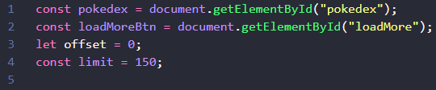
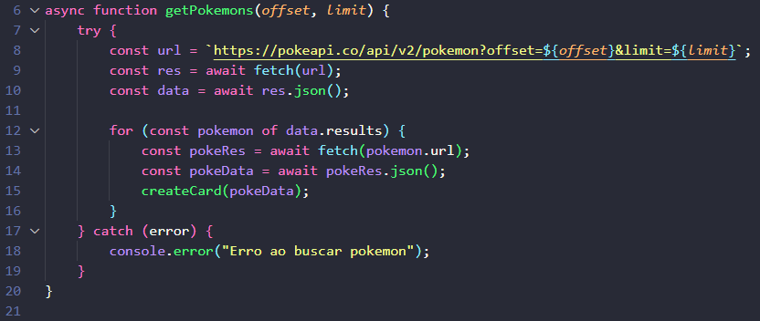
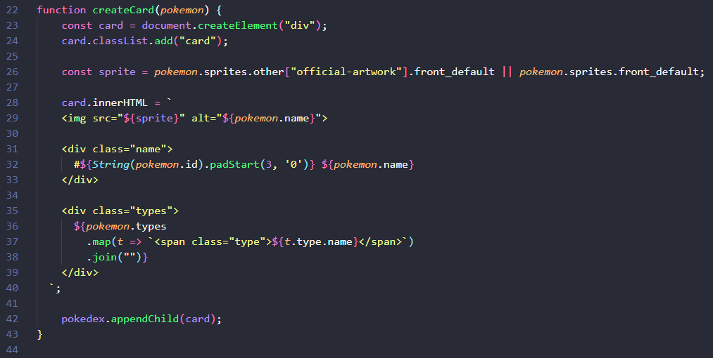
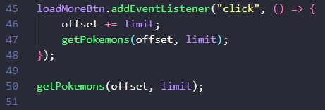

- Construir uma Pokédex interativa com API pública PokeAPI.
- Exibir nome, ID, imagem e tipos de cada Pokémon em modelo de "cards".
- Implementar um botão "Carregar Mais" para paginação.
💾 Clique aqui para baixar o Html e Css.
👉 Clique no link acima e baixe tudo em sua pasta. O arquivo é .rar
🖱 Clique com o botão direito encima do arquivo e clique em extrair arquivos, de ok.
Após isso, uma pasta vai ser criada com todos os arquivos.

👉 A variável pokedex recebe o elemento de div com o id ("pokedex").
👉 A variável loadMoreBtn recebe o elemento de div com o id ("loadMore").
👉 A variável offset é declarada com a palavra-chave let (indicando que seu valor pode ser alterado/reatribuído) e é inicializada com o valor 0. Em contextos como a busca de dados de uma API (como a PokéAPI), o offset geralmente representa o ponto de partida (o "deslocamento") na lista de resultados.
👉 A variável limit é declarada com a palavra-chave const (indicando que seu valor não pode ser alterado/reatribuído) e é inicializada com o valor 150. Em um contexto de API, o limit geralmente especifica o número máximo de itens a serem retornados em uma única solicitação.

👉 Declaração de uma função chamada getPokemons que é assíncrona (async). Funções assíncronas permitem o uso da palavra-chave await, o que pausa a execução da função até que uma Promessa seja resolvida. A função aceita dois parâmetros: offset e limit que virão das variáveis definidas nas linhas 3 e 4.
👉 Início de um bloco try. O código dentro deste bloco será executado, e se ocorrer algum erro (como um problema de rede ou um JSON malformado), a execução será interrompida e o controle será transferido para o bloco catch (linha 17).
👉 A variável url é declarada com const e armazena uma string que é o endereço da API da PokéAPI. Esta string usa uma Template Literal (indicada pelas crases `) para injetar dinamicamente os valores dos parâmetros offset e limit no URL, o que define quais Pokémon serão solicitados.
👉 A variável res armazena a resposta da chamada à API, realizada com a função fetch(url). A palavra-chave await garante que a execução pause até que a Promessa da solicitação de rede seja resolvida (ou seja, até que a resposta do servidor seja recebida).
👉 A variável data armazena o corpo da resposta HTTP (contido em res) convertido para um objeto JavaScript/JSON. O método .json() também é assíncrono e requer o await.
👉 Início de um loop for...of. Este loop itera sobre o array data.results, que é onde a API armazena a lista inicial de Pokémon (cada um contendo, no mínimo, um nome e um URL de detalhes).
👉 A variável pokeRes armazena a resposta de uma nova chamada fetch. Para cada Pokémon no loop, o código faz uma segunda chamada à API (usando o pokemon.url) para obter os dados detalhados daquele Pokémon específico (como imagem, tipos, etc.).
👉 A variável pokeData armazena o corpo da resposta da chamada detalhada (contida em pokeRes) convertido para um objeto JavaScript/JSON, que agora contém todas as informações detalhadas do Pokémon.
👉 Chamada de uma função externa de nome createCard. Esta função recebe o objeto pokeData (os dados detalhados do Pokémon) e provavelmente é responsável por criar e exibir um card HTML na página para esse Pokémon.
👉 Início do bloco catch. Este bloco é executado somente se ocorrer um erro em qualquer uma das linhas dentro do bloco try (linhas 8-16). Ele recebe o objeto de erro (error) como argumento.
👉 O método console.error() é usado para imprimir uma mensagem de erro no console do navegador, indicando que houve um problema ao tentar buscar os Pokémon. O erro real também pode ser inspecionado através da variável error.
👉 Resumindo: url guarda o endereço da API com os parâmetros de início (offset) e quantidade (limit) de pokémons. res espera a resposta dessa URL. data recebe essa resposta convertida para JSON → aqui vem a lista de pokémons, mas só com informações básicas (nome e url de detalhes). No for...of, percorremos cada item de data.results (cada pokémon da lista). pokeRes faz uma nova requisição usando o pokemon.url para pegar os detalhes de um pokémon específico. pokeData guarda a resposta convertida em JSON → aqui sim vem todos os dados desse pokémon (id, nome, tipos, sprites etc). createCard(pokeData) chama a função que monta o card na tela com esses dados. Se alguma parte falhar, cai no catch e mostra "Erro ao buscar pokemon".
👉 Então:
👉 data = lista simples de pokémons.
👉 pokeData = dados completos de um pokémon da lista.

👉 Declaração de uma função chamada createCard, que foi chamada na linha 15. Ela recebe um parâmetro chamado pokemon, que contém os dados detalhados de um Pokémon. 👉 podeData
👉 A variável card é declarada e armazena um novo elemento HTML div, criado dinamicamente com a função JavaScript document.createElement("div").
👉 Adiciona a classe CSS "card" ao elemento div recém-criado, usando a propriedade classList.add( ).
👉 A variável sprite é declarada. Ela tenta obter a URL da imagem de arte oficial do Pokémon em primeiro lugar (pokemon.sprites.other["official-artwork"].front_default). Se essa URL não existir (o que é indicado pelo operador OR lógico ||), ela usa a sprite frontal padrão (pokemon.sprites.front_default) como alternativa.
👉 Início da atribuição do conteúdo HTML interno do elemento card, usando a propriedade .innerHTML. É usado um Template Literal (crases `) para permitir a inserção de expressões JavaScript dentro da string.
👉 Cria um elemento img (imagem). O atributo src (fonte) recebe o valor da variável sprite. O atributo alt (texto alternativo) recebe o nome do Pokémon (pokemon.name).
👉 Cria um elemento div com a classe CSS "name", que conterá o número e o nome do Pokémon.
👉 Esta é a primeira parte do conteúdo da div da linha 31: exibe o símbolo # seguido do número do Pokémon (pokemon.id). O número é formatado usando o método .padStart(3, '0') (disponível em strings) para garantir que tenha sempre 3 dígitos, preenchendo com zeros à esquerda (ex: 1 se torna 001).
👉 Esta é a segunda parte do conteúdo da div da linha 31: insere o nome do Pokémon (pokemon.name).
👉 Cria um elemento div com a classe CSS "types", que conterá as tags de tipo do Pokémon (ex: "Grass", "Poison").
👉 Esta expressão JavaScript é responsável por processar o array de tipos do Pokémon (pokemon.types). O método .map( ) itera sobre cada tipo ( t ) e retorna uma nova string, que é um elemento span contendo o nome do tipo ( t.type.name ).
👉 O método .join(" ") é chamado no array de strings retornado pelo .map( ). Ele junta todas as strings span em uma única string, sem nenhum separador, para que o HTML de todos os tipos seja inserido corretamente.
👉 Fechamento do elemento div iniciado na linha 35.
👉 Final da atribuição à propriedade .innerHTML.
👉 O elemento card (que agora contém toda a estrutura HTML da linha 28 à 39) é adicionado como um novo elemento filho dentro do elemento pokedex (obtido na Linha 1). O método .appendChild() é a forma padrão de injetar elementos no DOM.
👉 Resumindo: createCard é chamada recebendo o que estava em pokeData, que agora entra como parâmetro pokemon. card cria uma div e adiciona a classe "card". sprite tenta carregar a imagem oficial do pokémon, se não existir, usa a sprite padrão como alternativa. card.innerHTML é montado com uma tag img que mostra a imagem (sprite) e tem alt com o nome do pokémon (pokemon.name), uma div class="name" que mostra o id do pokémon formatado com 3 dígitos (ex: #001), seguido do nome (Bulbasaur) uma div class="types" com os tipos do pokémon. O .map( ) cria um span para cada tipo ( t.type.name ), e o .join(" ") junta tudo sem separador (ficando Grass Poison, cada um em um span). O span é usado porque é inline, deixando tudo na mesma linha. Por fim, o card completo é adicionado dentro da pokedex (div principal) usando pokedex.appendChild(card).

👉 O método .addEventListener() é usado para anexar um manipulador de eventos ao elemento loadMoreBtn (o botão "Carregar Mais"). O evento que ele está esperando é o "click". Quando o botão é clicado, a função de callback (a função de seta () => { ... }) será executada.
👉 O valor atual da variável offset é incrementado pelo valor de limit (offset += limit é o mesmo que offset = offset + limit). Isso prepara a próxima chamada à API para começar a buscar dados a partir do final do lote anterior (ex: se o offset era 0 e o limit era 150, o novo offset será 150).
👉 A função getPokemons é chamada, passando o novo valor de offset e o valor de limit. Isso inicia a busca e exibição do próximo lote de Pokémon.
👉 Esta linha é a primeira chamada da função getPokemons quando o script é carregado. Ela inicia o processo de busca e exibição dos primeiros Pokémon (usando os valores iniciais de offset = 0 e limit = 150), preenchendo a tela logo de início.
👉 Resumindo: Linha 50: chama a função getPokemons(offset, limit) 👉 getPokemons(0, 150) logo que o script inicia, ou seja, começa mostrando do Pokémon #001 até #150. Linha 45: quando o botão "Carregar mais" é clicado, o offset é atualizado com offset += limit. Assim, se antes era 0, passa a ser 150. Isso faz com que a próxima chamada busque os Pokémon a partir do #151 até #300, sempre em blocos de 150, neste caso. Se você simplesmente alterar a variável limit, vai carregar em blocos no valor que você escolheu.